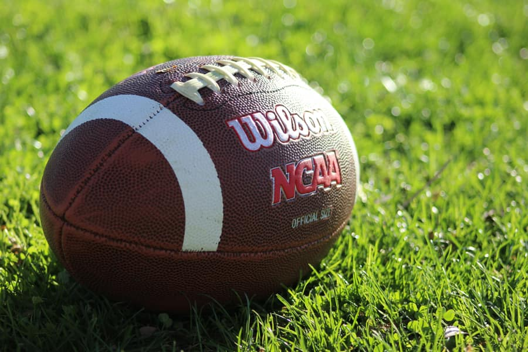

Fall Football Schedule
Last updated: August 28, 2026 | Kickoff times are subject to change for TV broadcast; confirm gameday.
Home games are played at Mountain America Stadium in Tempe. Times shown are local (Arizona, MST) and marked TBD where the broadcast window isn't set yet.

2026 Season Matchups
| Date | Opponent | Location | Home / Away | Kickoff (MST) |
|---|---|---|---|---|
| Sat, Sep 5 | Northern Arizona | Tempe, AZ | Home | 7:30 PM |
| Sat, Sep 12 | Utah | Salt Lake City, UT | Away | 1:00 PM |
| Sat, Sep 19 | Texas Tech | Tempe, AZ | Home | TBD |
| Sat, Sep 26 | Baylor | Waco, TX | Away | 4:00 PM |
| Sat, Oct 10 | Colorado | Tempe, AZ | Home | 7:00 PM |
| Sat, Oct 17 | Kansas State | Manhattan, KS | Away | TBD |
| Sat, Oct 31 | West Virginia | Tempe, AZ | Home | 6:00 PM |
| Sat, Nov 14 | Arizona (Territorial Cup) | Tucson, AZ | Away | 2:30 PM |
| Sat, Nov 28 | Cincinnati | Tempe, AZ | Home | TBD |
Note: This is placeholder schedule data for a student capstone. Verify all dates, opponents, and times on official Sun Devil Athletics sources.